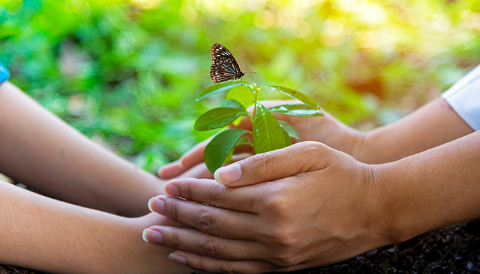
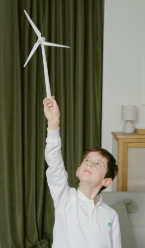
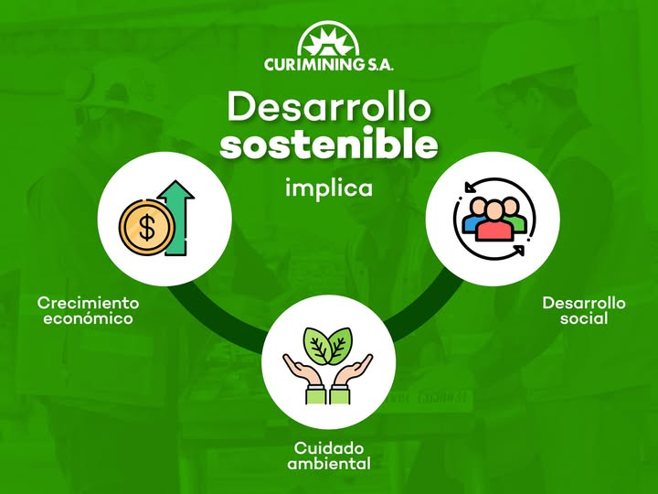

Nuestros programas están pensados para abordar diferentes problematicas ambientales desde la acción. A través de ellos buscamos generar conciencia, proteger los ecosistemas y promover prácticas sostenibles en la comunidad.
Conservación de la Biodiversidad

Este programa se enfoca en la proteccion de las especies y ecocistemas, buscamos preservar el equilibro natural.
- Restauracion de hábitats naturales
- Reforestación de espacios verdes
- Monitoreo de flora y fauna
Impacto
Contribuye a mantener la biodiversidad y mejorar la calidad ambiental
Educación Ambiental

Promueve la conciencia ambiental a través de la educacion y la participación de la comunidad.
- Charlas en instituciones educativas
- Talleres abiertos a la comunidad
- Campañas de concientización
Impacto:
Fomenta hábitos responsables y genera cambios a largo plazo.
Desarrollo Sostenible

Impulsa prácticas que permiten el desarrollo sin dañar el ambiente ni comprometer recursos futuros.
- Promoción del reciclaje
- Uso eficiente del recurso
- Implementación de proyectos sustentables
Impacto:
Mejora la calidad de vida respetando el entorno.
Nuestro impacto
- Más de 500 árboles plantados
- Más de 300 personas capacitadas
- Más de 50 actividades realizadas
Sumate
Podés ser parte del cambio participando en nuestras actividades, difundiendo nuestras acciones o colaborando como voluntario.